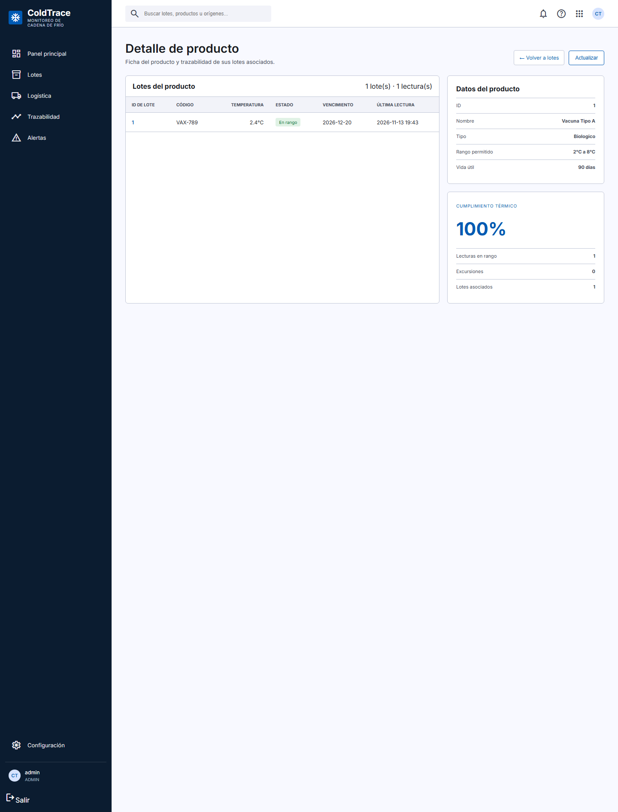
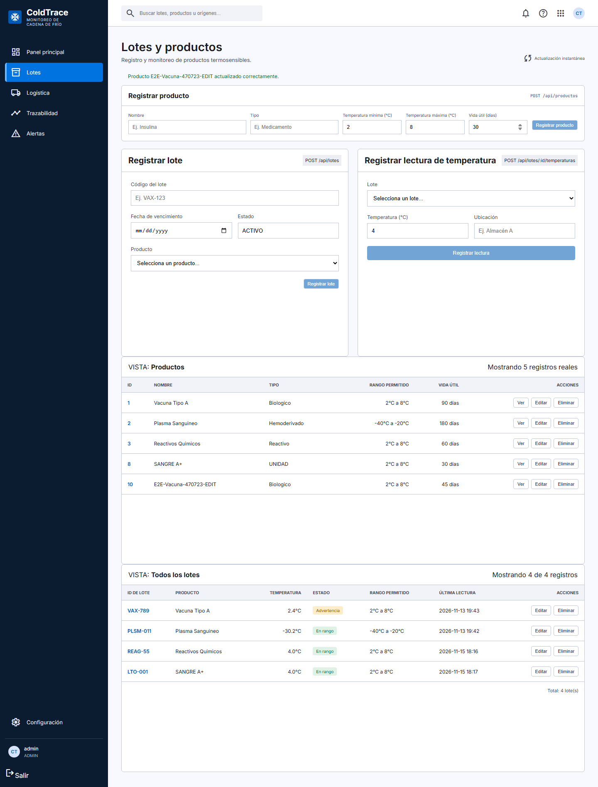
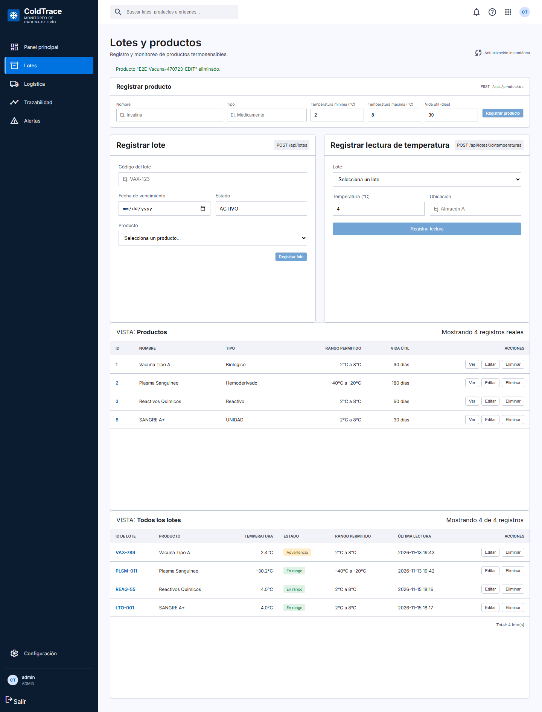
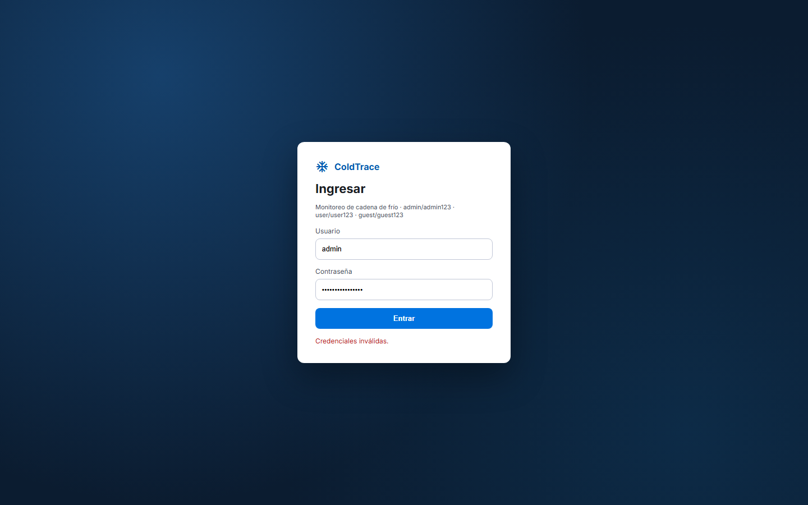
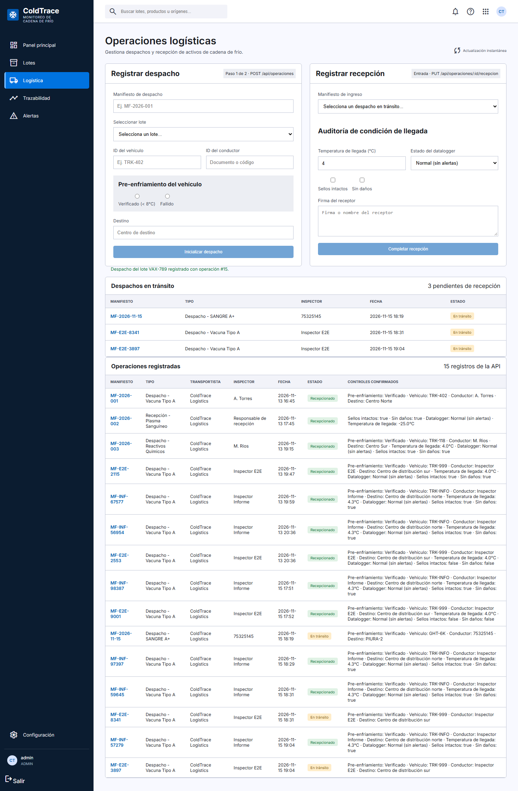
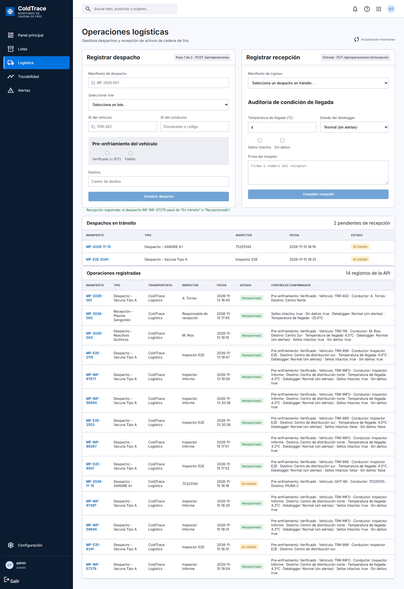
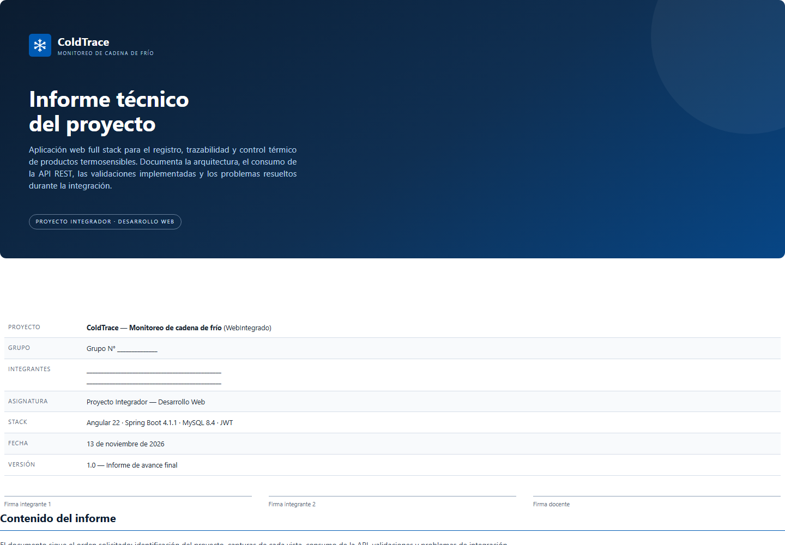

Rutas de código, líneas exactas y evidencia visual para cada bloque de la presentación.
Documento construido a partir del repositorio y de las capturas reales del sistema.
FrontendAngular 22
BackendSpring Boot
Base de datosMySQL 8.4
SeguridadJWT + roles
admin / admin123ADMIN · CRUD completo
user / user123USER · alta y edición
guest / guest123GUEST · solo lectura
00
Cómo usar este documento
Guía rápida
Cada sección conserva la estructura de la exposición: qué decir, dónde está en el código,
qué mostrar en pantalla y qué responder a la pregunta probable. Las rutas de archivo son
relativas a proyectointegradorfabiano/ y las líneas corresponden al código actual del repositorio.
Precisión inmediata: son 6 rutas de componente y 5 están protegidas con guardas.
La única pública es /login. Decir “6 rutas con guardas” es técnicamente inexacto.
01
Interfaz Angular
1,5 min
Hay componentes para lista, formulario y detalle. El enrutamiento tiene 6 rutas
(5 protegidas con guardas). Los estilos están en SASS, con tokens, mixins y parciales; el diseño es responsivo.
Qué decir y dónde está en el código
Lista de productos y lotes
Tabla de productos: frontend/src/app/features/lots/lots.component.ts:258-305
Tabla de lotes: frontend/src/app/features/lots/lots.component.ts:307-355
Tabla de últimos lotes del panel: frontend/src/app/features/dashboard/dashboard.component.ts:83-115
Figura 1.1. Panel principal (/dashboard) tras autenticarse como ADMIN.
Se ven los KPIs calculados con datos de la API, las alertas térmicas y la tabla de últimos lotes.
Es la vista que demuestra la navegación por Panel, y desde el menú lateral se pasa a
Lotes, Logística y Trazabilidad.

Figura 1.2. Detalle de producto en la ruta /productos/1. Muestra la ficha del producto,
sus lotes asociados y el cumplimiento térmico. Es la evidencia de la ruta /productos/:id
declarada en frontend/src/app/features/lots/lots.routes.ts:9.
Navegación que conviene mostrar
Entrar como admin y quedar en /dashboard.
Recorrer el menú: Panel principal → Lotes → Logística → Trazabilidad.
En Lotes, pulsar Ver en un producto para abrir /productos/:id.
Señalar que el detalle lee el ID de la URL y no recibe el objeto por parámetro.
Menú lateral: frontend/src/app/app.html:10-26
Botón “Ver” de la tabla: frontend/src/app/features/lots/lots.component.ts:284
El identificador viaja en la URL y se lee con ActivatedRoute; el estado compartido vive en un
store con signals. No se pasan objetos completos por parámetros de ruta.
Inyección de ActivatedRoute: frontend/src/app/features/lots/producto-detalle.component.ts:96
Lectura del parámetro :id: frontend/src/app/features/lots/producto-detalle.component.ts:125-134
Estado global con signals: frontend/src/app/core/services/coldtrace-store.service.ts:20-28
Recarga y exposición de datos: frontend/src/app/core/services/coldtrace-store.service.ts:34-90
Filtro derivado con computed: frontend/src/app/features/lots/lots.component.ts:376-387
// frontend/src/app/features/lots/producto-detalle.component.ts:125-134
ngOnInit(): void {
const id = Number(this.route.snapshot.paramMap.get('id'));
if (!Number.isInteger(id) || id <= 0) {
this.error.set('El identificador del producto no es válido.');
this.cargando.set(false);
return;
}
this.productoId.set(id);
this.cargarProducto();
}
Precisión: si en la exposición dices “6 rutas con guardas”, un jurado podría objetarlo.
Lo correcto es “6 rutas de componente, 5 protegidas; /login es pública”.
02
Formularios
2 min
Son formularios reactivos que sirven para registrar y para editar, porque el mismo formulario se reutiliza.
Tienen validaciones de campos requeridos, de formato (el código de lote con patrón) y de longitud; además,
una validación cruzada: la temperatura máxima debe ser mayor que la mínima.
Qué decir y dónde está en el código
Formularios reactivos
Importación de ReactiveFormsModule: frontend/src/app/features/lots/lots.component.ts:4-11 y :32
Login reactivo: frontend/src/app/features/auth/login.component.ts:3 y :13
Logística reactiva: frontend/src/app/features/logistics/logistics.component.ts:3, :37 y :135
El mismo formulario registra y edita
Título y endpoint cambian según editandoId(): frontend/src/app/features/lots/lots.component.ts:52-56
El método elige POST o PUT: frontend/src/app/features/lots/lots.component.ts:438-448
Carga los datos del producto en el mismo formulario: frontend/src/app/features/lots/lots.component.ts:476-487
Cancela la edición y limpia el formulario: frontend/src/app/features/lots/lots.component.ts:489-500
El texto del botón también cambia: frontend/src/app/features/lots/lots.component.ts:135-137
Se aplica al grupo completo: frontend/src/app/features/lots/lots.component.ts:397
Se muestra en el campo de temperatura máxima: frontend/src/app/features/lots/lots.component.ts:110-117
// frontend/src/app/features/lots/lots.component.ts:19-27
function rangoTermico(grupo: AbstractControl): ValidationErrors | null {
const minima = grupo.get('temperaturaMinima')?.value;
const maxima = grupo.get('temperaturaMaxima')?.value;
if (minima === null || maxima === null || minima === '' || maxima === '') {
return null;
}
return Number(minima) < Number(maxima) ? null : { rangoTermico: true };
}
El botón queda deshabilitado
El formulario de producto usa [disabled]="productoForm.invalid || guardando()" en
frontend/src/app/features/lots/lots.component.ts:135. Si el nombre está vacío
o el rango térmico es inválido, el formulario queda inválido y el botón no se puede pulsar.
Figura 2.1. Formulario de producto con los errores visibles. La captura corresponde a la prueba
automatizada que deja el nombre vacío y pone una temperatura máxima menor que la mínima. Se ven los mensajes
de obligatorio, longitud y rango térmico, y el botón deshabilitado.

Figura 2.2. El mismo formulario en modo edición. El encabezado cambia a “Editar producto” y el endpoint
mostrado es PUT /api/productos/{id}, pero los campos y las validaciones son los mismos que en el alta.
Guion de la demo
Entrar a Lotes con un usuario que pueda escribir.
Dejar el nombre vacío y salir del campo: aparece “El nombre es obligatorio”.
Escribir 2 caracteres: aparece “Mínimo 3 caracteres”.
Poner temperatura mínima 10 y máxima 5: aparece “Debe ser mayor que la temperatura mínima”.
Señalar que el botón queda deshabilitado y que los dos errores pueden convivir.
Este flujo está automatizado en frontend/e2e/coldtrace.spec.ts:71-93.
¿Por qué validar también en el servidor?
Porque una petición enviada directamente a la API se saltaría la interfaz. El backend debe proteger la regla
de negocio y responder con un error claro aunque el cliente no sea el Angular.
Validación en el servicio: src/main/java/com/example/WebIntegrado/service/ProductoService.java:36-40 y :59-63
Validaciones declarativas del modelo: src/main/java/com/example/WebIntegrado/model/Producto.java:24-37
Respuesta 400 con mensaje de validación: src/main/java/com/example/WebIntegrado/exception/GlobalExceptionHandler.java:27-34
Rango térmico inválido → 400: src/main/java/com/example/WebIntegrado/exception/IllegalArgumentExceptionHandler.java:12-18
Prueba que demuestra el rechazo: src/test/java/com/example/WebIntegrado/service/ProductoServiceTest.java:36-41
// ProductoService.java:59-63
private void validarRango(Producto producto) {
if (producto.getTemperaturaMinima() > producto.getTemperaturaMaxima()) {
throw new IllegalArgumentException("La temperatura minima no puede superar la maxima");
}
}
03
Consumo de servicios REST
2 min
Todo pasa por HttpClient. Un interceptor agrega el token a cada petición. Se usan los cuatro métodos:
GET para listar y consultar, POST para crear producto o despacho, PUT para editar producto y
recibir despacho, y DELETE para eliminar.
Qué decir y dónde está en el código
Servicio central de API: frontend/src/app/core/services/coldtrace-api.service.ts:14-34
Inyección de HttpClient y base /api: frontend/src/app/core/services/coldtrace-api.service.ts:16-17
Registro de provideHttpClient con interceptor: frontend/src/app/app.config.ts:14
Proxy del frontend hacia el backend: frontend/proxy.conf.json:1-7
Figura 3.1.POST. Alta de un producto desde el formulario. El mensaje de éxito muestra el ID
generado por la API y la nueva fila aparece en la tabla de productos.
Figura 3.2.PUT. Edición del mismo producto. El formulario se reutiliza, el encabezado indica
PUT /api/productos/{id} y la tabla refleja el nombre actualizado.

Figura 3.3.DELETE. Eliminación con confirmación del navegador. El producto desaparece de la
tabla y se muestra el mensaje de eliminación correcta.
Cómo mostrar la pestaña Red
Abrir DevTools → Network y filtrar por Fetch/XHR.
Crear un producto y seleccionar la petición POST /api/productos.
En Request Headers, señalar Authorization: Bearer <token>.
Explicar que el header lo agrega el interceptor en auth.interceptor.ts:9 y que el backend lo valida en JwtAuthFilter.java:31-34.
¿Qué pasa si eliminas un producto que tiene lotes?
La API responde 409 Conflict y la interfaz muestra un mensaje claro. La regla se valida en el
servicio antes de borrar: si el producto tiene lotes, no se elimina.
Traducción a 409: src/main/java/com/example/WebIntegrado/exception/GlobalExceptionHandler.java:42-45
Mensaje en el frontend para 409: frontend/src/app/features/lots/lots.component.ts:429-435
Pruebas: ProductoServiceTest.rechazaEliminarProductoConLotes y SecurityIntegrationTest.adminNoPuedeEliminarProductoConLotes
// ProductoService.java:54-64
@Transactional
public void eliminar(Long id) {
Producto producto = buscarPorId(id);
if (loteRepository.existsByProductoId(id)) {
throw new IllegalStateException(
"No se puede eliminar el producto " + id + " porque tiene lotes asociados");
}
repository.delete(producto);
}
Estado actual: el 409 es determinista para un producto con lotes. Ya no depende de que exista
una operación referenciando el lote.
04
Autenticación y autorización
2 min
El login es un formulario en Angular. El token JWT se guarda en localStorage junto con el rol y se usa
en cada petición. La redirección depende del rol: admin y user van al panel; guest va a
/lotes.
Figura 4.1. Formulario de login. Muestra los usuarios de prueba y las validaciones de usuario y
contraseña. Es la única vista pública de la aplicación.

Figura 4.2. Credenciales inválidas. El backend responde 401 y la interfaz muestra
“Credenciales inválidas” sin abandonar /login.
Figura 4.3. Sesión con rol GUEST. La redirección lleva a /lotes, se muestra el aviso
de solo lectura, no aparece el formulario de producto y el menú de Logística no está disponible. La tabla de
consulta sí se ve.
Guion de la demo
Entrar como admin/admin123: redirección a /dashboard.
Cerrar sesión y entrar como guest/guest123: redirección a /lotes y aviso de solo lectura.
Señalar que el enlace de Logística desaparece y que no hay formularios de escritura.
Volver al login y probar una clave incorrecta: aparece el mensaje de error.
Evidencia automatizada
Login ADMIN y redirección al panel: frontend/e2e/coldtrace.spec.ts:41-59
Login GUEST, redirección a /lotes y ausencia de formularios: frontend/e2e/coldtrace.spec.ts:168-180
Aviso de solo lectura: frontend/src/app/features/lots/lots.component.ts:44-47
El formulario de producto se oculta si no puede escribir: frontend/src/app/features/lots/lots.component.ts:52
El enlace de Logística se oculta: frontend/src/app/app.html:17
Botones de eliminar reservados a ADMIN: frontend/src/app/features/lots/lots.component.ts:288-295 y :323, :340-344
Sin token y con credenciales malas
Credenciales malas: mensaje Credenciales inválidas. en frontend/src/app/features/auth/login.component.ts:95-101.
Backend:BadCredentialsException → 401 en src/main/java/com/example/WebIntegrado/exception/GlobalExceptionHandler.java:22-25.
Sin token en una ruta del frontend:authGuard redirige a /login en frontend/src/app/core/guards/auth.guard.ts:7-11.
Sin token contra la API:SecurityConfig exige autenticación en src/main/java/com/example/WebIntegrado/security/SecurityConfig.java:32-37.
Precisión: sin token no aparece un mensaje de error en pantalla; el guard redirige silenciosamente al
login. El mensaje visible aparece con credenciales inválidas. Conviene decirlo así.
¿Es seguro guardar el token en localStorage?
Es práctico para un avance, pero no es la opción más segura para producción. Cualquier script inyectado en
la página podría leer el token. En producción convendría usar cookies HttpOnly +
Secure + HTTPS, para que JavaScript no pueda leer el token y para reducir el riesgo de robo
por XSS.
API stateless: src/main/java/com/example/WebIntegrado/security/SecurityConfig.java:31
Validación del token en cada request: src/main/java/com/example/WebIntegrado/security/JwtAuthFilter.java:31-41
05
Integración técnica
1 min
La API está desplegada en local con MySQL en Docker. El frontend envía y recupera datos, y las respuestas se ven
en tablas, tarjetas y listas. El despacho y la recepción de un lote demuestran el flujo completo: el despacho
aparece en “en tránsito” y pasa a “recepcionado”.
Qué decir y dónde está en el código
MySQL en Docker
Servicios Docker: docker-compose.yml:1-34
MySQL 8.4: docker-compose.yml:2-18
phpMyAdmin: docker-compose.yml:20-31
Volumen persistente: docker-compose.yml:12-13 y :33-34
Perfil MySQL por defecto: src/main/resources/application.yaml:5-9
Store que carga y comparte los datos: frontend/src/app/core/services/coldtrace-store.service.ts:34-90
Las respuestas se ven en tablas, tarjetas y listas
Tarjetas KPI del panel: frontend/src/app/features/dashboard/dashboard.component.ts:23-44
Tabla de últimos lotes: frontend/src/app/features/dashboard/dashboard.component.ts:83-115
Tabla de productos: frontend/src/app/features/lots/lots.component.ts:258-305
Tabla de lotes: frontend/src/app/features/lots/lots.component.ts:307-355
Tabla de despachos en tránsito: frontend/src/app/features/logistics/logistics.component.ts:210-242
Tabla de operaciones registradas: frontend/src/app/features/logistics/logistics.component.ts:245-285
Despacho y recepción
Formulario de despacho: frontend/src/app/features/logistics/logistics.component.ts:33-130
Método que registra el despacho (POST): frontend/src/app/features/logistics/logistics.component.ts:336-381
Formulario de recepción: frontend/src/app/features/logistics/logistics.component.ts:132-205
Método que registra la recepción (PUT): frontend/src/app/features/logistics/logistics.component.ts:383-421
La tabla “Despachos en tránsito” filtra por EN_TRANSITO: frontend/src/app/features/logistics/logistics.component.ts:300-302
El estado se pinta como “En tránsito” o “Recepcionado”: frontend/src/app/features/logistics/logistics.component.ts:270-275
Mensaje de éxito del cambio de estado: frontend/src/app/features/logistics/logistics.component.ts:401-405
Backend:
POST /api/operaciones: src/main/java/com/example/WebIntegrado/controller/OperacionController.java:54-59
PUT /api/operaciones/{id}/recepcion: src/main/java/com/example/WebIntegrado/controller/OperacionController.java:61-66
El despacho nace EN_TRANSITO: src/main/java/com/example/WebIntegrado/service/OperacionService.java:38-45
La recepción valida el estado y lo pasa a RECEPCIONADO: src/main/java/com/example/WebIntegrado/service/OperacionService.java:47-72
// OperacionService.java:51-55
if (!"EN_TRANSITO".equals(operacion.getEstado())) {
throw new IllegalStateException("El despacho " + operacion.getManifiesto() + " ya fue recepcionado");
}
operacion.setEstado("RECEPCIONADO");
Parte visual del sistema

Figura 5.1.Despacho. Tras el POST /api/operaciones, el registro aparece en la tabla
“Despachos en tránsito” con estado En tránsito. Se ven manifiesto, tipo, inspector, fecha y estado.

Figura 5.2.Recepción. El PUT /api/operaciones/{id}/recepcion registra la auditoría
de llegada y el despacho pasa de En tránsito a Recepcionado. La tabla de operaciones muestra el
estado final y los controles confirmados.
Figura 5.3.Trazabilidad. Línea de recorrido, telemetría de temperatura y ficha del lote.
La lectura “en vivo” que avanza cada 2 segundos es una simulación en el cliente, no una lectura real
del backend.
Aclaración que conviene adelantar: la telemetría de tránsito se simula en el cliente. El timer está en
frontend/src/app/features/traceability/trace-report.component.ts:243 (cada 2000 ms).
La lógica de ruido, reversión a la media y picos está en :271-312, y las lecturas
“en vivo” se agregan solo en memoria en :303-311.
Registrar un despacho con manifiesto, lote, vehículo, conductor, pre-enfriamiento y destino.
Señalar la fila nueva en Despachos en tránsito.
Ir a la recepción, elegir ese manifiesto y registrar temperatura, logger, sellos y firma.
Volver a la tabla de operaciones y mostrar el cambio a Recepcionado.
Entrar a Trazabilidad y aclarar que la curva “en vivo” es simulada en el frontend.
¿De dónde salen los datos que se ven al iniciar?
De un sembrado inicial que se ejecuta solo si la tabla producto está vacía. Crea 3 productos,
3 lotes, 3 lecturas y las operaciones de ejemplo, además de los usuarios de prueba.
Hay pruebas de navegador con Playwright, pruebas de backend con JUnit, el informe técnico con las capturas y el
repositorio en GitHub. El resultado de las pruebas se puede mostrar desde el reporte HTML o ejecutando
npm run e2e.
Qué decir y dónde está en el código
Playwright
Configuración: frontend/playwright.config.ts:1-31
Directorio de pruebas: frontend/playwright.config.ts:11
Arranque automático del frontend: frontend/playwright.config.ts:25-30
Script npm run e2e: frontend/package.json:10
#
Prueba funcional
Línea
1
Login ADMIN redirige al panel principal con KPIs de la API
frontend/e2e/coldtrace.spec.ts:41
2
Credenciales inválidas muestran mensaje de error en el login
frontend/e2e/coldtrace.spec.ts:61
3
Validaciones de formulario: requerido, longitud y rango térmico
frontend/e2e/coldtrace.spec.ts:71
4
Flujo CRUD completo: alta, detalle, edición y eliminación
frontend/e2e/coldtrace.spec.ts:95
5
Registrar despacho logístico y verlo en tránsito
frontend/e2e/coldtrace.spec.ts:147
6
Rol GUEST: redirección a lotes y solo lectura
frontend/e2e/coldtrace.spec.ts:168
Además existe 1 prueba de capturas para trazabilidad y recepción:
frontend/e2e/capturas-informe.spec.ts:33-75.
Precisión:npm run e2e ejecuta 7 tests (6 funcionales + 1 de capturas).
Si quieres sostener “6 de 6”, ejecuta solo el archivo funcional:
npx playwright test e2e/coldtrace.spec.ts, o di “6 pruebas funcionales, más 1 de capturas”.
Figura 6.1. Reporte HTML de Playwright. Se ven las 6 pruebas funcionales de
coldtrace.spec.ts y la prueba de capturas de capturas-informe.spec.ts.
El reporte marca 7 aprobadas en total; si la exposición exige “6 de 6”, hay que ejecutar solo el archivo
funcional y explicarlo.

Figura 6.2. Portada del informe técnico en PDF. El documento completo incluye arquitectura, capturas,
consumo de la API, validaciones y problemas de integración.
Documentación entregada
PDF: docs/reporte/Informe-Tecnico-ColdTrace.pdf
HTML fuente del informe: docs/reporte/informe.html
Informe de cumplimiento de requerimientos: docs/INFORME-AVANCE.md
Índice y explicación de capturas: docs/evidencias/README.md
Abrir el reporte: npm run e2e:report (frontend/package.json:11)
Requisito previo: backend corriendo en http://localhost:8080 (frontend/playwright.config.ts:25-30)
07
Precisiones y comandos
Anexo
Cuatro precisiones para no afirmar algo incorrecto
1. “6 rutas con guardas”
Son 6 rutas de componente y 5 protegidas; /login es pública.
2. “Sin token aparece el error”
Sin token el guard redirige a /login; el mensaje visible aparece con credenciales inválidas.
3. “Eliminar producto con lotes da 409”
Ya es correcto: ProductoService.eliminar valida los lotes y
GlobalExceptionHandler responde 409.
4. “Playwright 6 de 6”
Son 6 pruebas funcionales y 1 de capturas; npm run e2e corre 7. Para mostrar exactamente 6:
npx playwright test e2e/coldtrace.spec.ts.
Comandos de arranque para la demo
# 1) Base de datos
cd proyectointegradorfabiano
docker compose up -d
# 2) Backend (terminal 1)
.\mvnw.cmd spring-boot:run
# 3) Frontend (terminal 2)
cd frontend
npm start
# 4) Pruebas backend
cd ..
.\mvnw.cmd test
# 5) Pruebas E2E (con backend corriendo)
cd frontend
npm run e2e
Checklist de 60 segundos antes de exponer
MySQL levantado: docker compose up -d.
Backend respondiendo en http://localhost:8080.
Frontend en http://localhost:4200/login.
Sesión cerrada o en el usuario que corresponde al inicio de la demo.
Pestaña Network de DevTools lista para mostrar el Bearer.
Capturas del informe abiertas en docs/evidencias/.
Tener claro que la telemetría de tránsito es simulada en el cliente.